Banco Santander Chile
Redesigning
transfers.
Fewer steps do not always mean less effort.
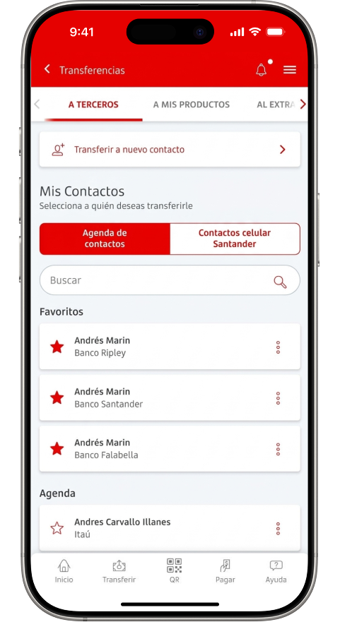
In September 2023, I was asked to redesign one of the most used modules in Banco Santander Chile's app.
The goal was to simplify transfers, reduce friction, and improve customer satisfaction. What began as an interface refresh ultimately challenged an assumption: that fewer screens and clicks necessarily make an experience easier.
Some quantitative data, business metrics, and internal information have been withheld under nondisclosure agreements (NDAs). These case studies focus on the design process, solution architecture, and qualitative impact.
Research, question, test,
negotiate, and learn again.
and research
friction
test, iterate
and observe
the problem
An editorial model adapted from the triple diamond. Validation required revisiting an already selected proposal; later learning also challenged the initial diagnosis.
The brief seemed straightforward.
The starting point was not.
Santander had just formed its in-house UX team. Until then, much of its digital product design had relied on external vendors.
The transition also meant establishing processes and consolidating tools. The move from Sketch to Figma had left the team without current editable files for the transfers module, complete documentation of its flows, or a library covering every component in production. Some components existed only in code.
Before proposing a new experience, I needed to understand the existing one.
Before changing anything, I first
had to reconstruct it.
I started with the live app. I walked through its features and captured each screen in sequence to reconstruct the architecture and understand how the flows connected.
Together with the Product Owner, I reviewed module usage and defined the scope: transfers to saved recipients and new contacts, flows that accounted for more than 80% of use.
I reconstructed the screens and interactions in Figma. I needed functional prototypes to observe how people completed tasks, beyond how the interfaces looked.
Of module usage: saved contacts and new recipients.
Evaluations
Unmoderated remote tests in Useberry and later Maze: tasks, success matrix, completion times, heatmaps, and first clicks.
Benchmarks
Comparison of transaction flows and features across relevant banks in Chile.
Limitations
Primarily convenience samples and prototypes that could not reveal failures in live services.
The interactive illustrative benchmark requires JavaScript.
The problem was not
limited to the screens.
Research showed that people had difficulty finding features and understanding how the flows were organized.
The main screen combined tabs, access to new recipients, an address book selector, search, favorites, and contacts. Meanwhile, history and scheduled transfers were hidden in a secondary menu.
Within the flow, a form for new recipients mixed personal and banking details, source account, amount, and additional fields. The receipt lacked information, and sharing it sent a screenshot of the entire screen.
- 01Fragmented navigation and hard-to-find features.
- 02Too many decisions at once.
- 03Receipts with insufficient information.
- 04Restrictions and limits that were hard to understand.
Were we reducing people's effort, or just concentrating it into fewer steps?
The preferred proposal
was not the best answer.
I began ideation with pen and paper. I explored layouts, discussed alternatives, and converged on three proposals: conservative, bold, and a leading concept.
In my view, the leading concept best combined business expectations with a modern interface: four shortcuts and “See more,” a carousel of source accounts, amount entry, and recipient selection.
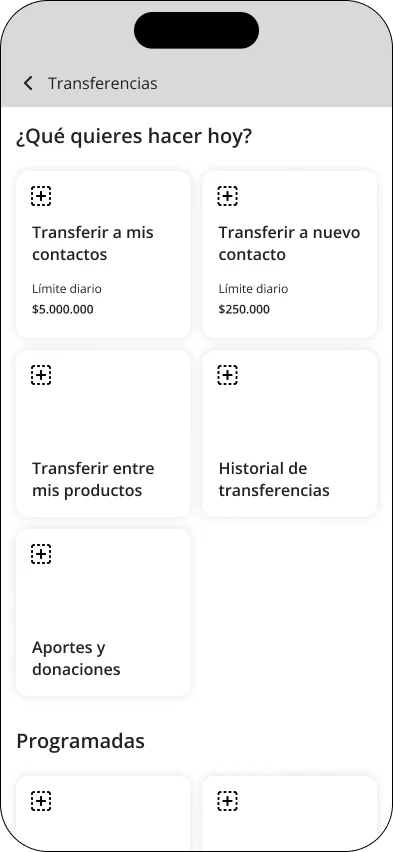
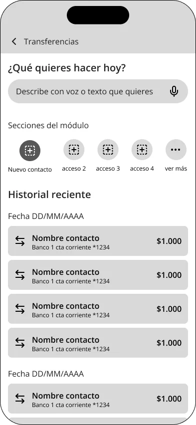
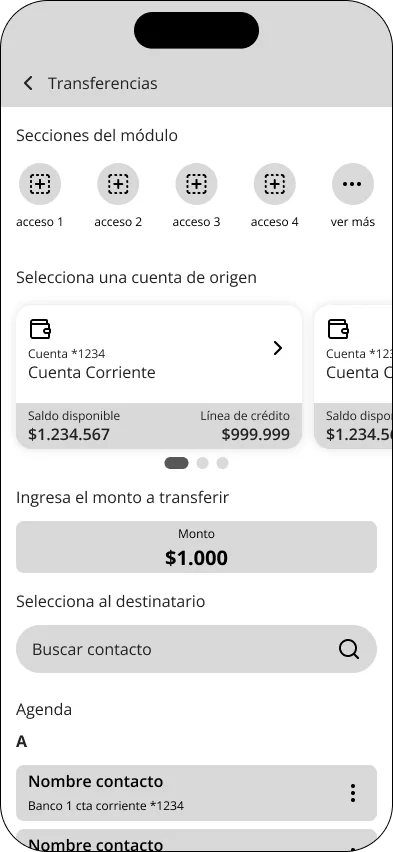
The promise was to reduce the flow to two steps.
The proposal was selected by consensus. In testing, it performed slightly better than the previous experience, but not well enough to consider the friction resolved.
We were still concentrating many decisions on one screen. I proposed testing the conservative alternative, although it was not the business lead's favorite.
Testing supported a change of direction.
Standing behind a design decision also means being willing to change it.
Simplifying meant separating
navigation from the transaction.
The conservative alternative introduced a fundamental change: the main screen would stop being the place where a transaction begins and become a landing screen dedicated to orientation.
Shortcuts were organized by relevance and use. Each task led to a separate flow, without carrying tabs and navigation controls through the entire transaction.
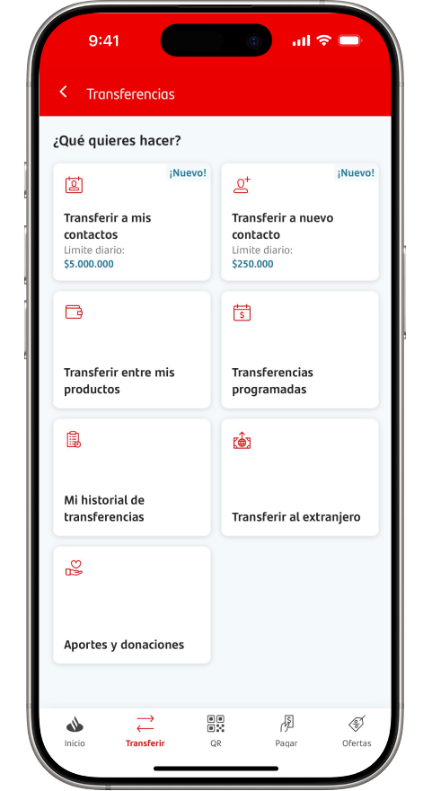
One additional screen. Fewer simultaneous decisions.
For saved recipients, we kept a familiar structure while improving the information available to identify them.
For new recipients, I split the form into two stages: recipient details first; then source account, amount, and transfer details. We also removed an alternate email field that had caused confusion.
Testing provided more favorable signals. The difference was not dramatic, but it supported a better grounded direction within the project's constraints.
An explanatory reconstruction of the change, not a screenshot of the original prototype.
More steps do not automatically mean more effort. Complexity also depends on when we make each decision.
Designing the solution was
only half the work.
Once the direction was validated, we had to translate design intent into what engineering could deliver. Some features had to be adapted or dropped.
Group accounts by recipient and Chilean tax ID (RUT)
The previous address book duplicated people with multiple accounts.
Show bank and final account digits
Better identification without technically rebuilding the entire address book.
Alphabetical ordering, consolidation of address books, and some early validations remained pending.
The moment we know it all went well.
A transfer does not feel complete just because processing stops. People also need an unmistakable signal that it succeeded.
I designed an animated success transition with sound to reinforce that moment. Implementing it required working through technical constraints with engineering.
The animation was more than decoration: it aimed to convey certainty and make confirmation memorable.
Do not share the screen.
Share the receipt.
I reorganized the receipt to highlight relevant information and include missing details such as date and time. We also made sharing generate an image of the receipt, without the app's navigation elements.
The position and presentation of Share went through three production iterations before we adopted a separate pill button below the receipt.
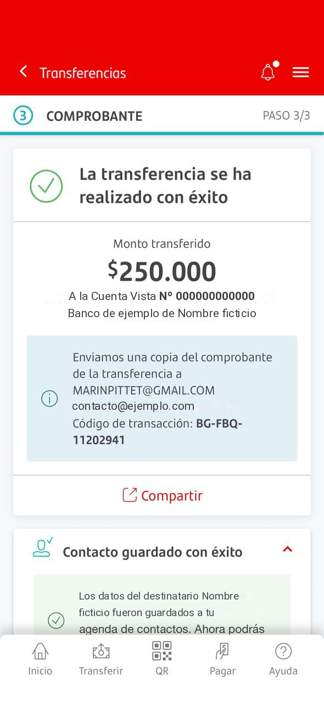
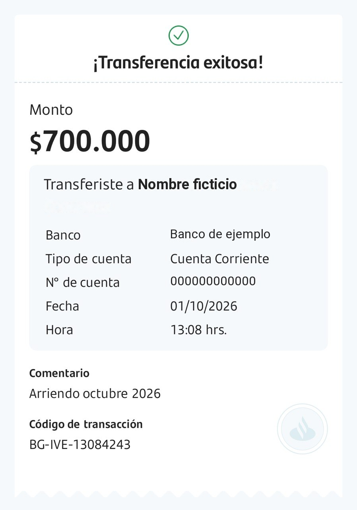
One action, three presentations.
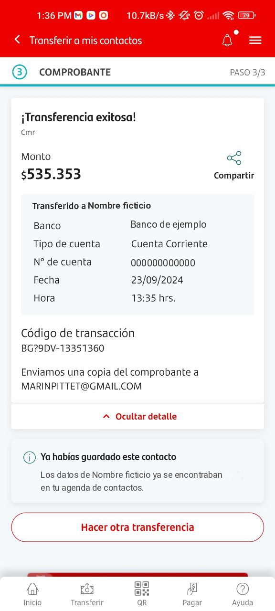
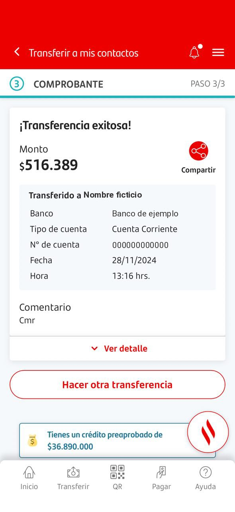
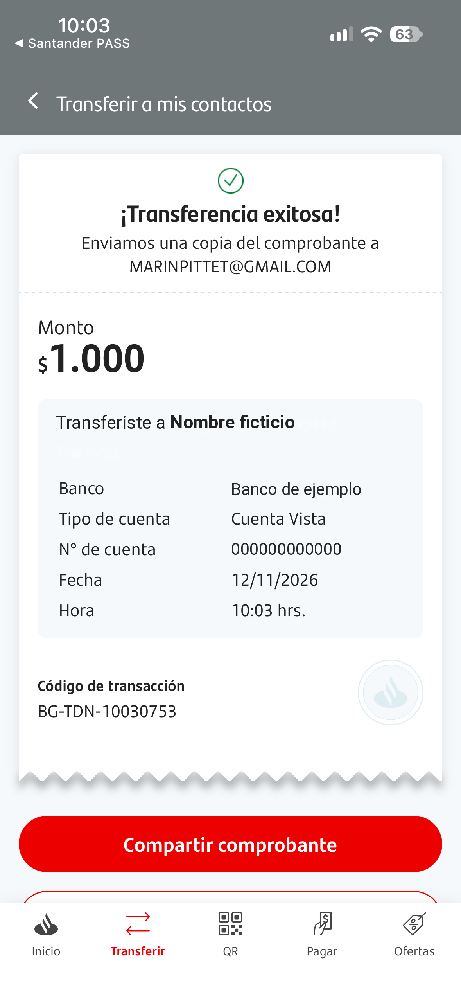
The three images show the receipt screen during its production iterations. The receipts in this case use sample data.
Roll out without losing stability.
We first tested with bank employees through banner controlled access. Because that did not reflect normal navigation, we then gradually exposed real customers through Firebase.
The priority was to avoid significant declines in conversion and NPS compared with the previous version, accounting for both resistance to change and the novelty effect.
What can we say about the results?
The redesign reached production without release incidents or substantial changes to the flows. The comparison documented during the pilot showed comparable satisfaction across both experiences.
The data do not support attributing a specific causal increase in NPS to the redesign. Later monitoring also revealed authorization, continuity, stability, and usability issues that persisted beyond the interface changes.
A local solution became
a shared pattern.
The landing screen offered more than a visual reorganization: it provided a structure that could accommodate new features without overcrowding a transaction screen again.
My UX manager began calling these screens “portadillas.” The team adopted the pattern for other areas, including Payments and Help Center.
It was not a universal solution. It worked for modules containing independent tasks that needed to be discoverable before execution began.
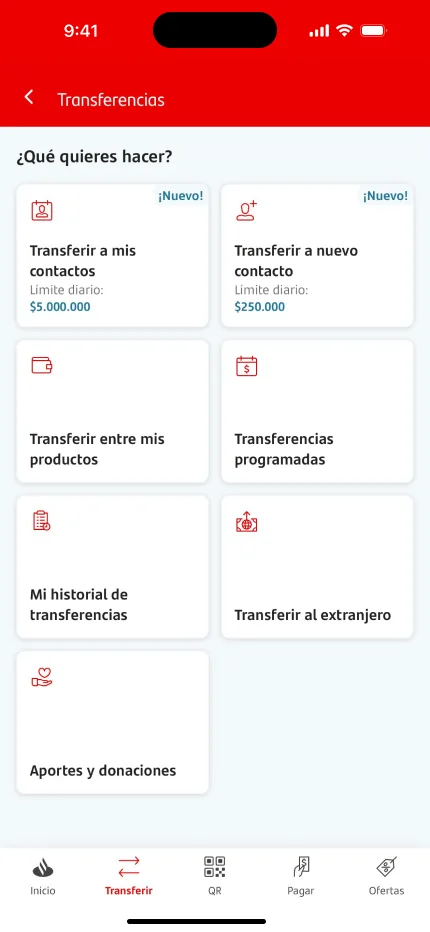
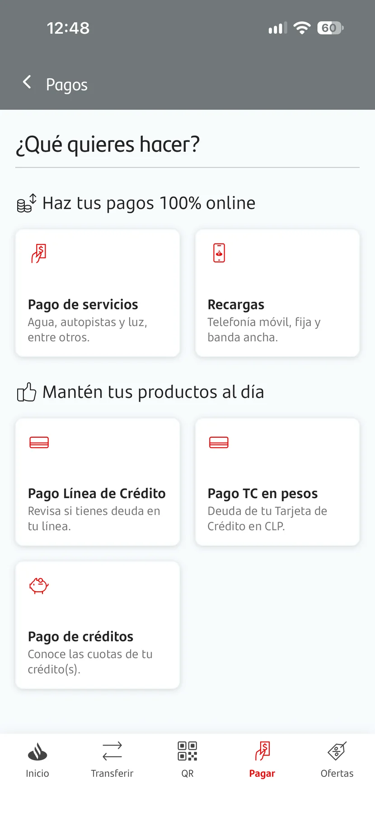
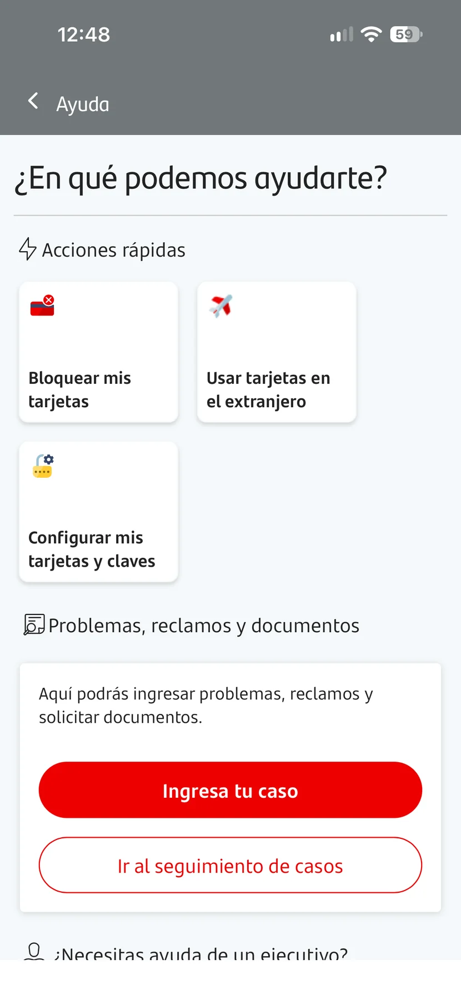
Adoption of the navigation pattern is documented. Other teams expressed interest in the receipt and animation, but their implementation in those products has not been confirmed.
The problem I should have
questioned sooner.
Looking back at the entire project, there is one thing I would do differently today: investigate the source of dissatisfaction more deeply before committing to a redesign of this scale.
The initial brief already contained a solution: redesign transfers. We researched, identified friction, challenged proposals, and validated alternatives. But much of the work was shaped by that premise.
Later monitoring broadened my perspective. Authorization difficulties, service failures, and continuity problems also affected satisfaction. Some friction was clearly related to usability; other issues required technology or process changes.
This project taught me to change my mind in response to evidence, negotiate without losing the intent behind a solution, and see decisions through to implementation.
Are we designing the best solution to a brief, or have we confirmed that this is the problem we actually need to solve?
Sometimes the most meaningful changes are invisible.